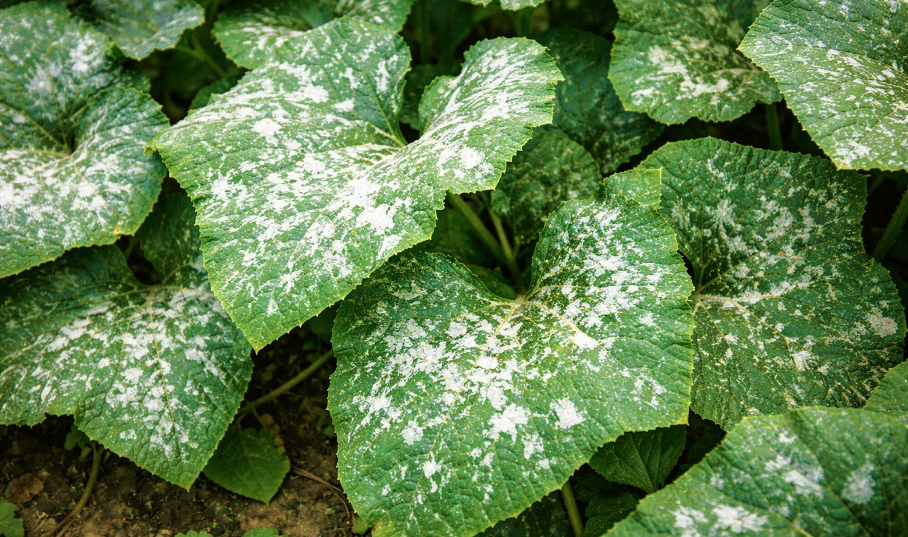

කොළ අංගමාරය
Leaf Blight
🔍 රෝග ලක්ෂණ
- කොළ මත දුඹුරු හෝ කළු පැහැති ලප ඇති වීම.
- කාලයත් සමඟ මෙම ලප විශාල වී කොළ වියළී යාම.
- තෙතමනය අධික කාලවලදී රෝගය වේගයෙන් පැතිරීම.
🛠️ පිළියම් සහ ප්රතිකාර
- රෝගය වැළඳුණු පත්ර වහාම කපා ඉවත් කර පුළුස්සා දමන්න.
- කාබනික දිලීර නාශකයක් (Organic Fungicide) භාවිතා කරන්න.
- කොළ මතට සෘජුව ජලය දැමීමෙන් වැළකී මුල්වලට ජලය සපයන්න.
🛡️ වැළැක්වීමේ පියවර
- පැළ සිටුවීමේදී නියමිත පරතරය තබා වාතාශ්රය ලැබීමට සලස්වන්න.
- රෝගවලට ඔරොත්තු දෙන බීජ වර්ග වගාව සඳහා තෝරාගන්න.
පිටිපුස් රෝගය
Powdery Mildew
🔍 රෝග ලක්ෂණ
- කොළ සහ කඳ මතුපිට සුදු පැහැති කුඩු (පිටි) තැන්පත් වීම.
- කොළ හැකිලී යාම සහ කහ පැහැයට හැරීම.
- ශාකයේ වර්ධනය බාල වීම.
🛠️ පිළියම් සහ ප්රතිකාර
- කොහොඹ تෙල් මිශ්රණයක් (Neem Oil Spray) ශාකයට ඉසින්න.
- සූර්යාලෝකය හොඳින් ලැබෙන ස්ථානයකට ශාකය මාරු කරන්න.
- ආසාදිත කොටස් කපා ඉවත් කරන්න.
🛡️ වැළැක්වීමේ පියවර
- අධික ලෙස නයිට්රජන් පොහොර යෙදීමෙන් වළකින්න.
- පැලෑටි අතර ප්රමාණවත් ඉඩක් තබා සුළං ගමනාගමනය පවත්වා ගන්න.